毎月・毎週の要点
型を確認 → 組み替え → まとめて確定
- 毎月：第1〜5週の枠、新規・終了、特指示の期間を確認します。
- 毎週：「来週」で実際の日付・休止・予定を確認します。赤枠は同じ週に来うる重なりです。
- 編集後：「まとめて確定」を押し、「保存しました」を確認します。
訪問カードを動かすと、曜日の型そのものが変わります。「この日だけ」の変更はありません。日々の変更は iBow で管理してください。
01この盤でできること・しないこと
何曜日の何時に、どの列で訪問するかという繰り返しの型を管理します。第1・3週だけの枠や、期間つきの特指示も置けます。
| この盤で管理します | 別に管理します |
|---|---|
| 月〜金の曜日・列・開始時刻・訪問時間・第〇週 | その日だけの訪問変更・追加など、日々の予定は iBow で管理します。 |
| 利用者の開始・終了、休止・再開、特指示の期間 | この盤の編集は iBow へ反映されません。iBow との自動取り込み・同期はありません。 |
| サ担・会議・契約・その他の、日付つき／毎週の予定 | メール通知や、看護師を列へ割り当てる機能はありません。 |
表示を絞ることと、変更する範囲は別です。1回だけの振り替えのつもりで、訪問カードを動かさないでください。
以前の「看護 訪問スケジュール盤」とは別のアプリです。以前の盤は影響を受けず、そのまま動いています。
02ひらき方・ログイン・ログアウト
- 画面のURLを開きます。
- 管理者PINを入れ、「ひらく」を押します。
画面上部に「管理者」と出ることを確認します。PINで役割が決まります。
- 盤を確認します。
最初は「型（全部）」の「曜日の盤」です。今日の曜日、土日なら月曜を開きます。

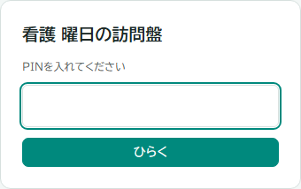
PINを間違えたとき
入力を確かめます。続けて間違えると、端末ごとの待ち時間や、全体の受付停止がかかります。「あと約〇分」と出たら、繰り返し試さず待ってください。急ぐ場合はシステム担当へ連絡します。
使い終わったとき
- 編集した場合は「まとめて確定」を押し、「保存しました」を確認します。
- 右上の「ログアウト」を押します。
- PINの入力画面に戻ったことを確認します。
保存するなら「まとめて確定」、変更をやめるなら「1つ戻す」を必要な回数押します。未確定の表示が消えてから操作してください。
03画面の見取り図
画像はすべて架空データです。画像を押すと原寸で開きます。

- ①〜③：見方・表示・曜日を順に選びます。③の右の「未配置」「休止中」は件数の表示で、対象の人は右の欄で確認します。
- ④：予定を盤へドラッグするか、利用者を追加します。
- ⑤：保存済みの最新データの読込み・印刷・ログアウトです。
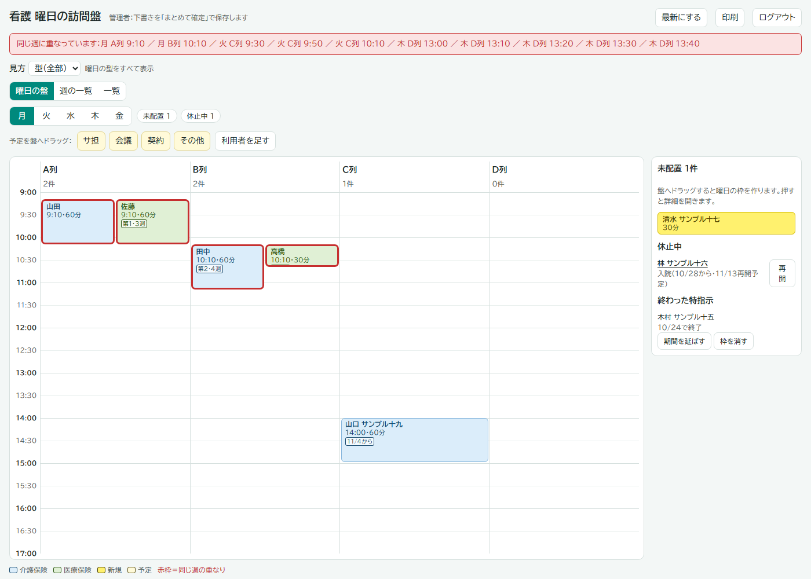
04見方：型・第1〜5週・今週・来週
- 上の「見方」を開きます。
- 確認したい見方を選びます。
- 今週・来週では、右に出る月曜〜金曜の日付も確認します。
| 見方 | 何が見えるか |
|---|---|
| 型（全部） | 毎週・第〇週の枠を並べます。今日休止中・終了済みの人や、期間が終わった枠は出ません。 |
| 第1〜5週 | 毎週と、選んだ第〇週の枠です。特定の月の日付を選ぶ機能ではありません。 |
| 今週・来週 | 各日付で、週・利用者の開始／終了・休止・枠の期間を判定します。予定は当日と毎週のものです。 |
1〜7日＝第1週、8〜14日＝第2週、15〜21日＝第3週、22〜28日＝第4週、29〜31日＝第5週です。カレンダーの段数ではなく、同じ月〜金でも途中で変わります。

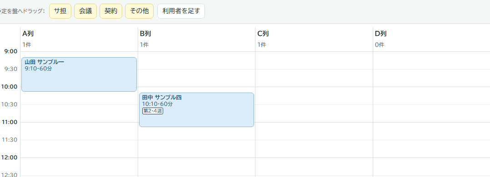

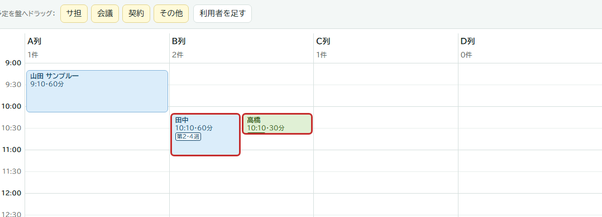
型・第〇週では、開始日が先でも「〇/〇から」の札つきで見えます。今週・来週は、その日の条件に合う枠だけが出ます。
右の欄は常に今日が基準です。来週の盤に再開後の枠が出ても、今日休止中なら右の「休止中」にも載ります。
05表示：曜日の盤・週の一覧・一覧
見方を変えずに、並べ方だけを切り替えられます。
曜日の盤：1曜日を広く見て組み替える
- 「曜日の盤」を押し、曜日タブを選びます。
- カードをドラッグして組み替えます。押すと詳細が開きます。
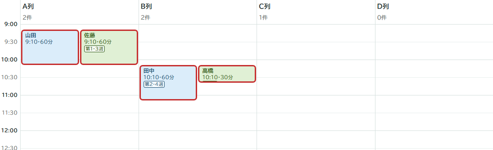
週の一覧：月〜金を一度に比べる
- 「週の一覧」を押し、月〜金を比べます。入りきらなければ横へスクロールします。
- 見出しかカードを押すと、その曜日の盤へ移ります。詳細は、移った盤でもう一度カードを押します。
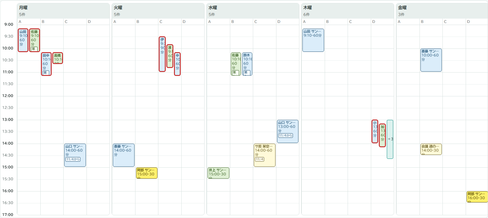
一覧：時刻順に読む
- 「一覧」を押し、曜日と「自分の列」を選びます。全列は「（全部）」です。
- 時刻順に確認します。項目を押すと詳細が開きます。
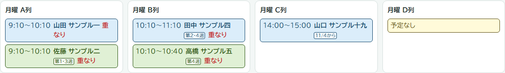
06色・赤枠・重なり

| 色・札 | 意味 |
|---|---|
| 水色 | 介護保険です。 |
| 緑 | 医療保険です。 |
| 黄色 | 「新規」の利用者です。保険より優先する色です。チェックは管理者が外します。 |
| 薄い黄色・破線 | 予定と、保険が「その他」の利用者です。 |
| 第〇週・特指示などの札 | 週・特指示の期限・開始予定日・予定の日付などです。 |
| 赤枠 | 同じ列で時間が重なり、同じ週に来うるカードです。型の見方では、枠の期間が交わることも条件です。 |

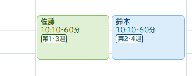

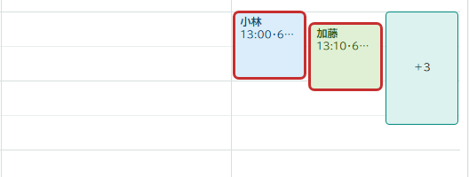
「＋N」で隠れたカードを確認する
- 盤の「＋N」を押すと、一まとまりの全カードが開きます。
- カードを選び、詳細で週・期間・列・時刻を確認します。
管理者の上部には「同じ週に重なっています：…」という赤い帯も出ます。別の曜日の重なりも並びます。看護師にはこの帯は出ません。
別の列同士は判定しません。訪問可能かは管理者が確認します。

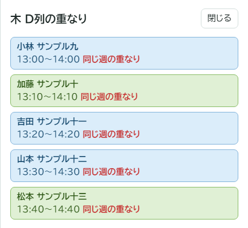
07カードを動かして組み替える
- カードをつかみます。
曜日の盤か週の一覧で、押したまま動かします。スマホでは指で動かします。
- 移動先の列・時刻へ運びます。
点線の枠に「曜日・列・開始〜終了」が出ます。開始時刻は10分刻みです。
- 目安を確認して離します。
移動先と「下書き」の通知が出ます。盤の外で離すと移動しません。
- 型と重なりを確認し、確定します。
間違えたら「1つ戻す」。よければ「まとめて確定」です。
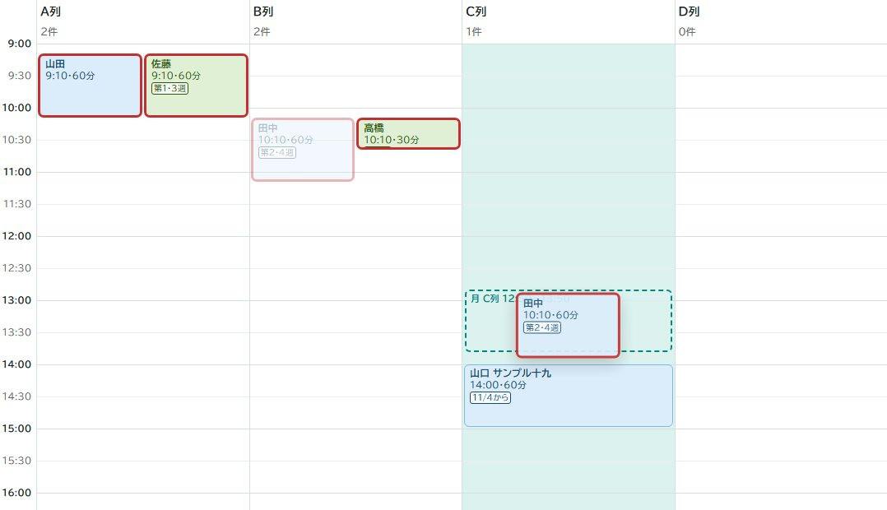
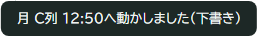
毎週の枠を第2週の見方で動かしても、毎週の位置が変わります。第2・4週の枠なら両方の位置が変わります。週の指定・期間・分数は変わりません。
別の曜日へ移すには、「週の一覧」で隣の曜日へドラッグするか、カードの詳細で曜日を選び直します。
ドラッグは9:00〜17:00に収まる範囲です。長い枠は詳細で「分」を確認します。位置を選びにくいときは、詳細の「開始」を使います。
日付つき予定の移動は、今週・来週では移動先の日付、型・第〇週ではその予定と同じ週内の日付になります。毎週の予定は繰り返しの曜日・列・時刻が変わります。
08下書きと保存
編集はまずその画面の下書きになります。自動保存はありません。詳細の「閉じる」も、保存・取り消しはしません。
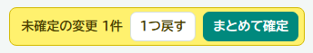
- 編集して全体を見直します。
見方・曜日・表示を切り替えても下書きは残ります。
- 誤りは「1つ戻す」で戻します。
直前から1操作ずつ、最大80件戻せます。入力欄の外では Ctrl＋Z も使えます。
- 「まとめて確定」を押して待ちます。
「保存しました」と黄色の欄が消えたことを確認します。確定後は「1つ戻す」で保存前へ戻れません。
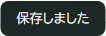
保存に関する2つのお知らせ
| 表示 | 対応 |
|---|---|
| 他の人が先に保存しました | 保存を止め、最新を読み込みます。成功すると下書きが置き換わります。最新を見て編集をやり直します。自動合体はありません。 |
| シートに読めない値があります （上の赤い帯） | 保存できません。タブ名・行番号・項目を担当へ伝えます。修復後、下書きを整理して最新を読み直します。 |
保存の競合は、赤い帯ではなく画面下の通知で知らせます。
未確定なら離れる警告が出ますが、続けると下書きが失われます。閉じた後に下書きを復元する機能はありません。
09詳細を開いて編集する
- 曜日の盤でカードを押します。
選んだ枠が先頭に縁取りされます。同じ人のほかの枠も続きます。
- 対象の枠の欄を直します。
入力後は別の欄を押して入力を終えます。チェックはその場で反映します。
- 「閉じる」で盤を見直し、確定します。
曜日の枠で変えられること
- 曜日・列・開始：枠の置き場所です。開始は10分刻みにそろいます。
- 分：この枠の長さです。1〜600の整数です。
- 週：毎週、または第1〜5週を選びます。
- 期間開始・期間終了：枠の有効期間です。空欄なら、その側の期限はありません。
- 特指示：特指示の枠として扱うチェックです。

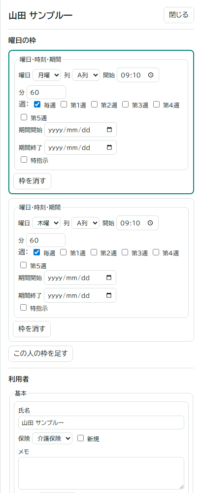
毎週から、第1・3週などへ変える
- 「毎週」を外します。最初は今日の第〇週が選ばれます。
- 必要な週にチェックを入れ、不要な週を外します。
訪問を止める操作ではありません。止める場合は休止・終了・枠の削除を使います。
枠を足す・消す
- 「この人の枠を足す」を押します。表示中の曜日・最初の列・10:00に、標準分の毎週枠ができます。
- 曜日・列・開始・分・週・期間を直します。
- 不要な枠は「枠を消す」を押し、盤で確認して確定します。利用者は消えません。最後の枠なら、休止中・終了済みでなければ未配置へ戻ります。
利用者の「基本」
| 項目 | 使い方・注意 |
|---|---|
| 氏名・保険・新規 | 必要に応じて直します。黄色を終えるときは「新規」を外します。 |
| メモ | 看護師も読めます。必要な補足に絞ります。 |
| 標準分 | 新しく作る枠の分数（1〜600）です。既存枠は変わりません。 |
| 開始日・終了日 | 利用者全体の期間です。今週・来週は各日で判定し、終了日当日まで表示します。終了日は開始日以降にします。 |
枠の期間終了も当日を含みます。実際の日付で来る人を確認するときは「今週」「来週」を使います。
10特指示の期間と枠
特指示は期間つきの曜日の枠です。
- カードを開きます。
通常枠も残すなら「この人の枠を足す」で別枠を作ります。
- 曜日・列・開始・分・期間を入れ、「特指示」にチェックします。
期間終了が空欄なら、期限では消えません。
- 必要なら「月〜金すべてに置く」を押します。
同じ列・時刻・分・週・期間の枠を、まだない曜日に追加します。
- 全曜日の重なりを確認し、確定します。
1枠の変更は他の曜日へ連動しません。曜日ごとに直します。条件変更後にもう一度このボタンを押すと、以前の枠とは別に増えることがあります。

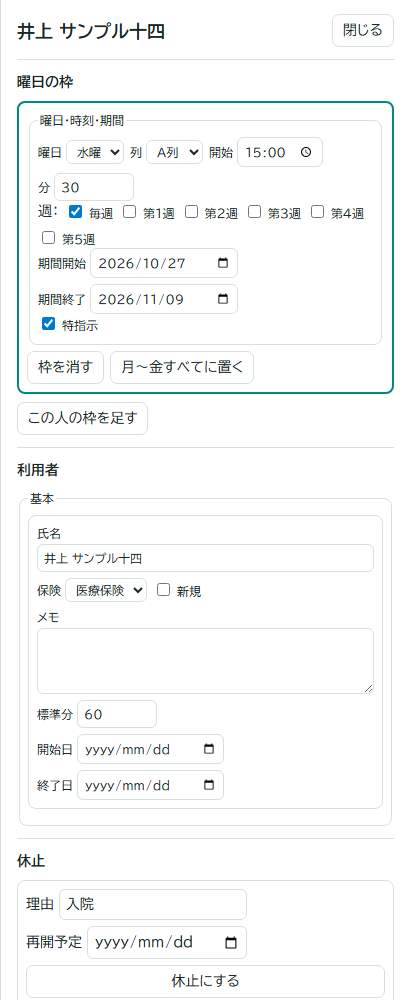
期間が終わったら
型の見方では、終了日の翌日から右の「終わった特指示」へ移ります。枠は残ります。今週・来週は各日で判定するため、週内の終了日以前には見えることがあります。
- 「期間を延ばす」を押し、対象枠の期間を直します。
- 他の曜日も確認し、確定します。不要なら「枠を消す」を使います。
利用者の終了日が今日より前なら、この欄にも出ません。

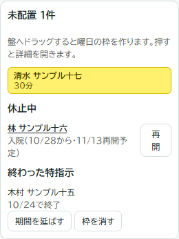
11入院などの休止と再開
入院などでは「休止にする」を使います。元の曜日・列・時刻・週は残ります。
今日から休止する
- カードを開き、下の「休止」へ進みます。
- 理由と再開予定を入れます。
理由の初期値は「入院」です。再開予定は今日より後の日付、未定なら空欄にします。
- 「休止にする」を押して確定します。
今日から休止し、右の「休止中」に載ります。
再開予定日を決めている場合
再開予定日当日から、元の型が表示対象に戻ります。今週・来週では、再開日以後の枠を先に確認できます。
理由や予定日の入力自体は残ります。不要なら「再開」で設定を外して確定します。枠の期間や利用者の終了日が過ぎていれば、再開だけでは表示されません。
予定より早く再開する／未定から再開する
- 右の「休止中」で「再開」を押すか、利用者の詳細で「再開」を押します。
- 休止設定が外れ、元の曜日・列・時刻へ戻ったことを確認します。
- 「まとめて確定」を押します。
予定を後から入れるには、休止中の利用者名を押し、「再開予定」を入力して確定します。
12新しい利用者を足す
- 「利用者を足す」を押します。
氏名・保険・標準分を入れます。標準分の初期値は60分です。
- 「未配置に入れる」を押します。
「新規」が付いた黄色のカードで、右の未配置へ入ります。
- 曜日を選び、未配置から盤へドラッグします。
標準分の毎週枠ができます。第〇週の見方でも、その週限定にはなりません。
- 詳細で週・期間・開始日などを直し、確定します。
別の曜日は「この人の枠を足す」で追加します。

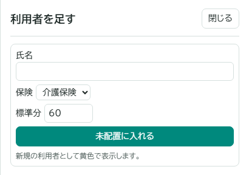
選んだ週に枠がない人や、期間切れの枠が残る人は入りません。「型（全部）」や「終わった特指示」も確認します。
13サ担・会議・契約などの予定
サ担・会議・契約・その他を、日付つきか毎週の予定として載せます。

- 種類のボタンを盤へドラッグします。
置きたい列・時刻へ運びます。初期の長さは60分です。
- 詳細で内容・日付・列・開始・分を確認します。
自動入力の日付を必ず確かめます。曜日は月〜金です。
- 繰り返すなら「毎週」にチェックします。
日付欄が曜日欄へ変わります。
- 「閉じる」で盤へ戻り、確定します。
削除は詳細の「予定を消す」→確定です。

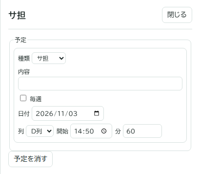
最初に入る日付
| 作成したときの見方 | 初期の日付 |
|---|---|
| 型（全部）／第1〜5週 | 来週のその曜日です。選択した第〇週の日付ではありません。 |
| 今週 | 今週のその曜日です。今日より前になる場合もあります。 |
| 来週 | 来週の、置いた曜日の日付です。 |
「毎週」を外すと、現在の見方で日付を入れ直します。以前の日付には戻りません。
過ぎた予定はどうなるか
型・第〇週では、今日より前の予定は消えますが、データは残ります。毎週の予定は消えません。「今週」は実日付で表示するため、週内の過ぎた曜日の予定も見えます。
14看護師にはどう見えるか
看護師PINでは見るだけです。カードを動かす、編集する、追加する、保存することはできません。
- 同じURLを看護師PINでひらきます。
最初は「今週」の「一覧」、今日の曜日（土日なら月曜）です。
- 曜日と「自分の列」を選びます。
列は端末に記憶します。「（全部）」で全列を表示します。
- 時刻順に読み、項目を押して詳細を確認します。
曜日の盤や週の一覧にも切り替えられます。
- 管理者の保存後は「最新にする」を押します。
未確定の下書きは見えません。
盤の赤枠や一覧の「重なり」は見えます。必要な連絡は管理者が別途行います。

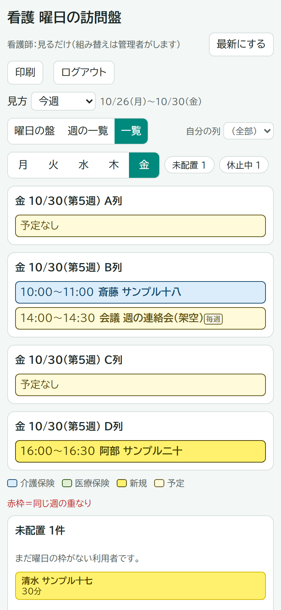
15印刷する
- 見方・表示・曜日を選びます。
今週・来週は日付も確認します。
- 必要なら先に確定します。
下書きも印刷できますが、「未確定の下書き」と付きます。
- 「印刷」を押します。
設定はA4横です。プレビューで向き・収まりを確認します。
| 印刷前の表示 | 印刷する内容 |
|---|---|
| 曜日の盤 | 選んでいる曜日の盤です。 |
| 週の一覧 | 月〜金の週の一覧です。 |
| 一覧 | 印刷時だけ、選んでいる曜日の盤へ切り替わります。「自分の列」で絞っていても、盤の全列を印刷します。印刷を終えると一覧表示に戻ります。 |
操作部分・赤い帯・右の欄・詳細欄は印刷しません。「＋N」の中身も展開しません。必要な詳細は画面で確認します。
この説明書自体を印刷する場合は、ブラウザの印刷を使います。説明書はA4縦の設定です。
16困ったとき（Q&A）
Q. 保存できない／確定ボタンが押せません
- 管理者ログインと、未確定の変更があるかを確認します。
- 「シートに読めない値」の赤い帯は、タブ名・行番号・項目をシステム担当へ伝えます。
- 入力の通知に従い、日付・分数などを直します。「混み合っています」は少し待って再度試します。
Q. 「通信できませんでした」と出ます
- 接続を確認します。下書きがあれば、ページを閉じたり更新したりしません。
- 接続後、もう一度確定します。続く場合は表示文と状況を担当へ伝えます。
保存中に切れた場合は、保存済みか不明なことがあります。同じ編集を重ねず、担当に最新との照合を依頼します。
Q. 「他の人が先に保存しました」と出ました
保存を止め、最新の盤を読み直します。成功すると下書きは置き換わります。
- 最新の内容を確認し、先に保存した人と相談します。
- 必要な変更をやり直し、確定します。
読込みも通信に失敗した場合は、最新に切り替わっていないことがあります。担当へ相談します。
Q. 「PINが未設定です」と出ます
システム担当へ依頼します。Apps Script のスクリプト プロパティ名は VIEW_PIN・ADMIN_PIN（半角アンダーバー）です。両方を別の値で設定します。値は問い合わせ文に書きません。
Q. PINを間違えて締め出されました
表示された時間を待ち、急ぐ場合は担当へ連絡します。全体の受付停止は、担当がスクリプト プロパティに UNLOCK＝1 を入れると、次のログイン試行で解除します。端末ごとの待ち時間は解除しません。
Q. 保存前の状態へ戻したいです
下書きなら「1つ戻す」です。確定済みなら担当へ復元を依頼します。保存直前の状態はバックアップに最大30件残ります。
- 担当が日時と内容を確認します。
- 担当がスクリプト プロパティ
RESTORE_ROWに件番号を入れます。見出しの次の行が1件目です。 - 担当がエディタから
restoreBackupを実行します。復元前の現状もバックアップへ残ります。 - 連絡後、下書きを整理して「最新にする」で確認します。
復元は盤全体です。他の人の保存も戻るため、対象時点を確認します。通常の画面に復元ボタンはありません。
Q. 枠が見えません
- 見方・曜日を確認し、一覧の「自分の列」を「（全部）」にします。
- 「型（全部）」、休止中、期間・終了日、終わった特指示を確認します。
- 「＋N」があれば開きます。
Q. ログアウト・最新にするができません
未確定の変更を確定するか、「1つ戻す」で戻し、黄色の欄が消えてから操作します。
Q. ログインの有効期限が切れました
PINを入れ直し、最新を確認します。PIN変更でもログイン状態が切れます。保存中に出た場合は、保存完了とは扱いません。
17運用の決めごと
- 修正は画面から行います。元シートの手編集は、読めない値で保存が止まる原因になります。修復はシステム担当へ依頼します。
- 日々の変更は iBow です。この盤は繰り返しの型を変えます。
- 管理者の同時編集を避けます。自動合体はありません。閲覧中の端末は「最新にする」で更新します。
- 変更履歴は日時・役割・件数、操作記録はログインや復元などです。利用者名・PINは残りません。誰が操作したかは個人でなく役割の記録です。
- バックアップには氏名・メモも含みます。そのまま外部へ出しません。問い合わせの画像も個人情報を隠し、PINは書きません。
型の変更範囲と、実日付での見え方を確かめて保存してください。